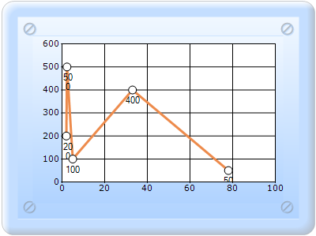
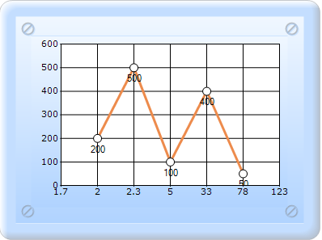

By default, points in a series are plotted against their x and y values. However, in some cases the x values are invalid as they are used in representing categories. Such an x-axis that ignores the x-values and simply uses the positional value of a point in a series is said to be Indexed.
In the figures displayed below, the first chart shows a Line chart that is not indexed while the second chart shows a Line chart for which the x-axis is indexed.

Figure 251: Line chart with indexed as false

Figure 252: Line chart with indexed as true
 Note: Indexing is supported only on the x-axis
in Essential Chart.
Note: Indexing is supported only on the x-axis
in Essential Chart.
The above property automatically affects all the x-axes in the chart.
You can also optionally customize the labels of the points in such an indexed series as explained in Chart Labels Customization.
Indexed Xvalues contained chart can be created in two ways:
· Builder
· ChartModel
 Builder
Builder